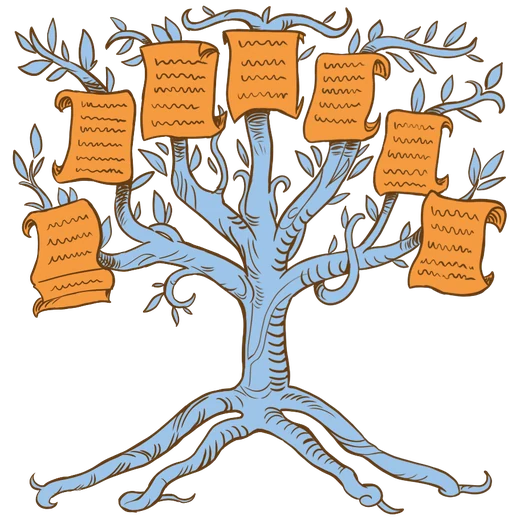
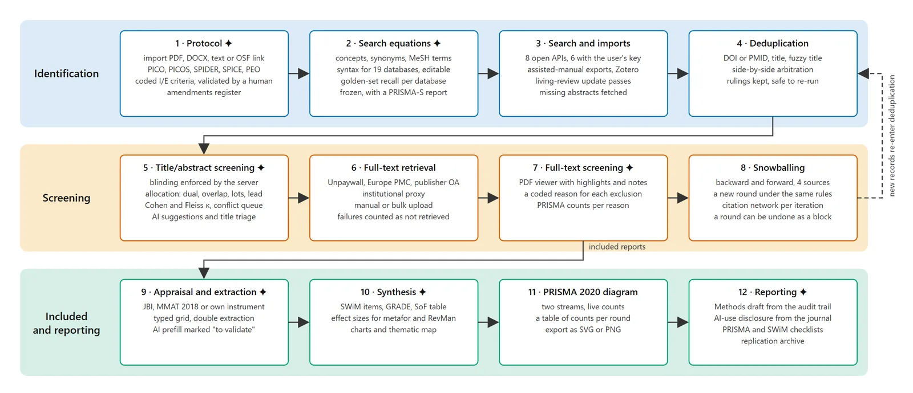
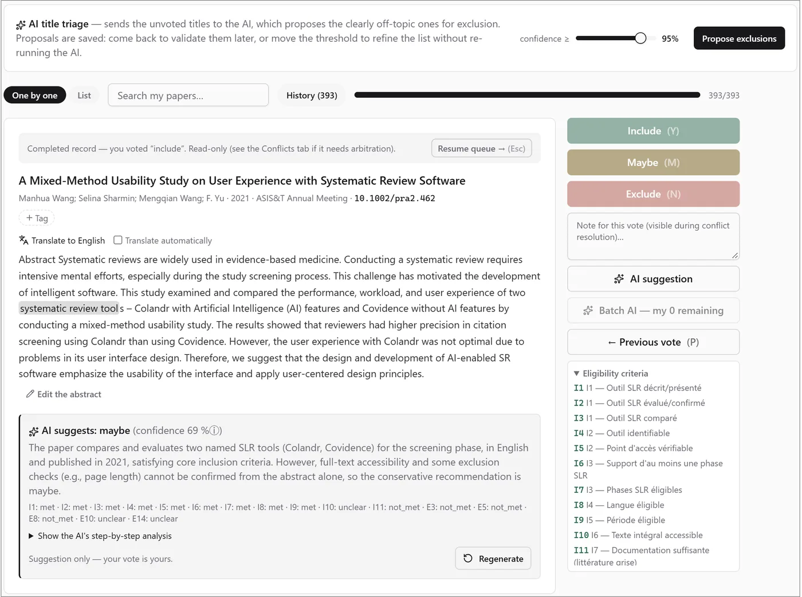
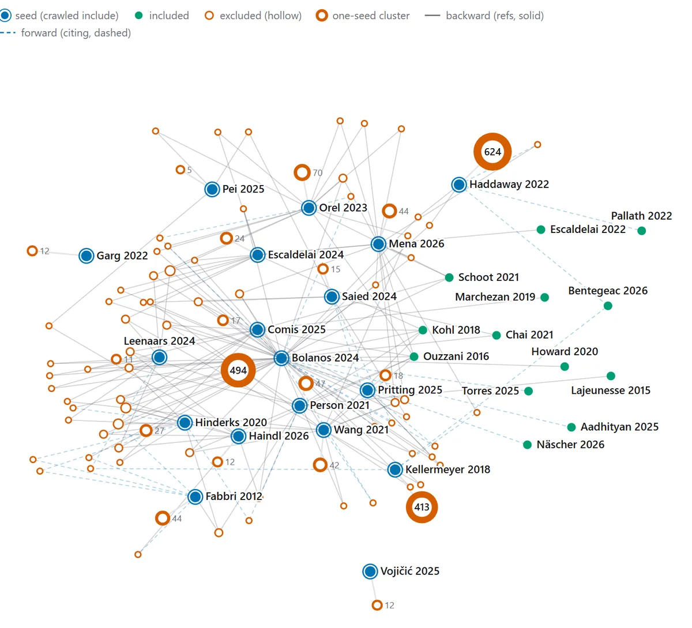

Systematic reviews, from protocol to PRISMA, in one place.La revue systématique, du protocole au PRISMA, au même endroit.
LitUbik is a free, open-source web application that carries a systematic literature review through every step — search, deduplication, double-blind screening, full text, snowballing, appraisal, extraction and reporting — for a team of reviewers, with AI help that is never applied without a human.LitUbik est une application web libre et gratuite qui mène une revue systématique de la littérature à travers toutes ses étapes — recherche, dédoublonnage, screening en double aveugle, texte intégral, snowballing, évaluation, extraction et rédaction — pour une équipe de relecteurs, avec une aide IA qui n'est jamais appliquée sans validation humaine.
The demo opens a private guest session in one click: no e-mail, no account. Already have an account?La démo ouvre une session invitée privée en un clic : ni e-mail, ni compte. Vous avez déjà un compte ?Sign inSe connecter.

The whole pipeline, twelve stepsToute la chaîne, en douze étapes
Each step feeds the next, and everything is recorded: the PRISMA 2020 flow diagram and the Methods section are written from what actually happened, not from memory. Steps marked ✦ offer optional AI assistance.Chaque étape alimente la suivante et tout est consigné : le diagramme PRISMA 2020 et la section Méthodes sont écrits à partir de ce qui s'est réellement passé, pas de mémoire. Les étapes marquées ✦ proposent une aide IA optionnelle.

Built for real review teamsPensé pour de vraies équipes de revue
Double-blind screening, measuredScreening en double aveugle, mesuré
Reviewers vote one record at a time with keyboard shortcuts and the coded eligibility criteria in view. Blinding is enforced by the server; conflicts go to an arbitration queue.Les relecteurs votent fiche par fiche, au clavier, avec les critères d'éligibilité codés sous les yeux. L'aveugle est garanti par le serveur ; les désaccords partent dans une file d'arbitrage.
Cohen's and Fleiss' κ, per-reviewer load, vote cross-matrixκ de Cohen et de Fleiss, charge par relecteur, matrice croisée des votes
AI suggestions with their reasoning, criterion by criterion — your vote stays yoursSuggestions IA argumentées, critère par critère — le vote reste le vôtre
AI title triage for broad searches, validated as a checklistTri IA des titres pour les recherches larges, validé sous forme de liste

Snowballing you can see — and undoUn snowballing visible — et réversible
Backward and forward citation searching runs in rounds seeded by the included papers. Each round's discoveries go back through screening, and the latest round can be removed as a block if it was seeded by mistake.La recherche de citations, en amont et en aval, avance par itérations à partir des articles inclus. Les découvertes de chaque itération repassent par le screening, et la dernière itération peut être retirée d'un bloc si elle est partie d'une erreur.
Citation network per iterationRéseau de citations par itération
Full-text retrieval from open-access sources, your library proxy, or uploadRécupération du texte intégral en accès ouvert, via le proxy de votre bibliothèque, ou par dépôt

PrinciplesPrincipes
Human in chargeL'humain décide
AI proposes, people decideL'IA propose, l'humain tranche
Every AI output waits for a human validation. Each call is logged, and the AI-use disclosure for your paper is drafted from that journal.Toute sortie de l'IA attend une validation humaine. Chaque appel est journalisé, et la déclaration d'usage de l'IA pour votre article est rédigée à partir de ce journal.
Your dataVos données
Self-hostedAuto-hébergé
Run it on your laptop, your lab server or your university's. Bring your own AI key — Anthropic, OpenAI, Gemini, Mistral, Grok — or a local model.Sur votre portable, le serveur du labo ou celui de l'université. Avec votre propre clé IA — Anthropic, OpenAI, Gemini, Mistral, Grok — ou un modèle local.
OpenOuvert
Free software, AGPLv3Logiciel libre, AGPLv3
No subscription, no per-seat price. The code, the standards it follows (PRISMA 2020, PRISMA-S, SWiM, JBI, MMAT) and the exports stay open.Ni abonnement ni prix par utilisateur. Le code, les standards suivis (PRISMA 2020, PRISMA-S, SWiM, JBI, MMAT) et les exports restent ouverts.
A private guest session with sample projects. Nothing to install; the demo is reset every night.Une session invitée privée avec des projets d'exemple. Rien à installer ; la démo est remise à zéro chaque nuit.
Download the zip from the latest release, unzip and run LitUbik.exe: no Python, no terminal.Télécharger le zip de la dernière version, le décompresser et lancer LitUbik.exe : ni Python ni terminal.
One docker compose up for a shared instance; reviewers work from their browser. Instances can also sync through a shared folder.Un docker compose up pour une instance partagée ; les relecteurs travaillent depuis leur navigateur. Plusieurs instances peuvent aussi se synchroniser via un dossier partagé.
Cite LitUbikCiter LitUbik
If LitUbik helped your review, please cite the preprint that describes it, 10.48550/arXiv.2610.37181, and the software. The software DOI below is for version 1.0.0; to cite every version at once, use the concept DOISi LitUbik a servi à votre revue, merci de citer la prépublication qui le décrit, 10.48550/arXiv.2610.37181, ainsi que le logiciel. Le DOI du logiciel ci-dessous correspond à la version 1.0.0 ; pour citer toutes les versions à la fois, utilisez le DOI de concept10.5281/zenodo.23652583.
PreprintPrépublication · APA
Béquet, A. J., Laurent, S., & Bouvier, B. (2026). LitUbik: open-source software for human-led systematic reviews with traceable AI assistance (arXiv:2610.37181). arXiv. https://doi.org/10.48550/arXiv.2610.37181
PreprintPrépublication · BibTeX
@misc{bequet_litubik_preprint_2026,
author = {Béquet, Adolphe J. and Laurent, Sébastien and Bouvier, Baptiste},
title = {{LitUbik}: open-source software for human-led systematic
reviews with traceable {AI} assistance},
year = {2026},
eprint = {2610.37181},
archivePrefix = {arXiv},
primaryClass = {cs.DL},
doi = {10.48550/arXiv.2610.37181},
url = {https://doi.org/10.48550/arXiv.2610.37181}
}
SoftwareLogiciel · APA
Béquet, A. J., & Laurent, S. (2026). LitUbik: an open-source, AI-assisted workbench covering the full systematic-review lifecycle, from registered protocol to PRISMA 2020 (Version v1.0.0) [Computer software]. Zenodo. https://doi.org/10.5281/zenodo.23652584
SoftwareLogiciel · BibTeX
@software{bequet_litubik_2026,
author = {Béquet, Adolphe J. and Laurent, Sébastien},
title = {{LitUbik}: an open-source, {AI}-assisted workbench covering
the full systematic-review lifecycle, from registered
protocol to {PRISMA} 2020},
version = {v1.0.0},
year = {2026},
publisher = {Zenodo},
doi = {10.5281/zenodo.23652584},
url = {https://doi.org/10.5281/zenodo.23652584}
}